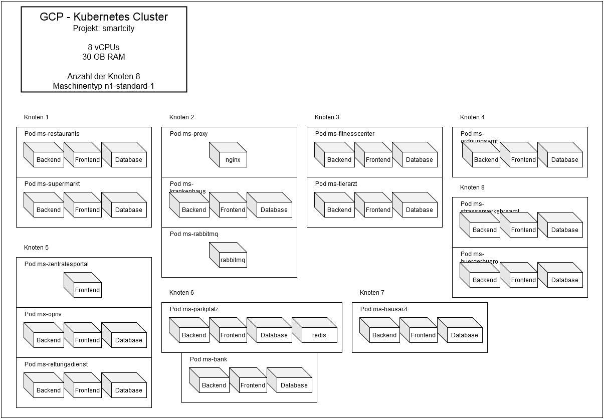

class: center, middle # Smart-City --- # Inhalt 1. Vorstellung 2. Neue Stadt, neues Glück 3. Romantischer Abend 4. Tierattacke 5. Sport ist Mord 7. Zentrale Themen 8. Lessons Learned --- class: center, middle # Vorstellung --- # Vorstellung - Kleinstadt - Smart im Alltag - unterstützt bei Vorgängen in der Stadt --- class: center, middle # Neue Stadt, neues Glück --- ## Bürgerbüro ### Allgemein - Zentraler Service innerhalb der Smart City - Anlaufstelle für alle Bürger ### Features - Nutzerverwaltung (Registrierung, Datenverwaltung, Konto deaktivieren) - Schwarzes Brett(digitale Pinnwand) um aktuelle Informationen darzustellen (Bürger und Dienstleister) - Mitarbeiter Bereich (Aushänge freischalten) - Admin Bereich (Mitarbeiter einstellen und entlassen) --- ## Bürgerbüro .center[<img src="img/SWArchitecture_Buergerbuero.svg" width="95%">] --- ## Straßenverkehrsamt ### Allgemein - Stellt amtliche Dienstleistungen zur Verfügung ### Features - Beantragen, Bestellen und Verwalten von - einem Führerschein - Nummernschilder - Umweltplaketten - Kurzzeitkennzeichen - Mitarbeiter Bereich - Anträge bearbeiten - Rechtevergabe - Ankündigungen beim Bürgerbüro veröffendlichen --- ## Straßenverkehrsamt .image[] --- ## Straßenverkehrsamt - Progressive Web App .center[<iframe width="640" height="500" src="https://www.youtube.com/embed/yE7icTcKNQI" frameborder="0" allow="accelerometer; autoplay; encrypted-media; gyroscope; picture-in-picture" allowfullscreen></iframe>] --- ## Bank ### Allgemein - Konto erstellen - Genereller Umgang mit Geld ### Features - Kontenverwaltung(Erstellen und Löschen) - Kontenüberblick(Alle Transaktionen) - Überweisungen von Konto A nach Konto B --- ## Bank .center[<img src="img/Systemarchitektur_bank.png" width="95%">] --- class: center, middle # Romantischer Abend --- ## Restaurant ### Allgemein - Sammlung aller Restaurants der SmartCity - Informieren über Restaurants und mit Restaurants interagieren ### Features - Restaurantbestellungen - Tische reservieren - Restaurantinformationen sammeln ### Kommunikation - Bürgerbüro - Bank - Parkplatz --- ## Restaurant .center[] --- ## Restaurant .center[] --- ## Parkplatz ### Allgemein - Parkplatzreservierung - Für Bürger und Services ### Features - Reservierungen erstellen und stornieren - Buchungs- und Reservierungsübersicht - Melden von Problemen für Reservierungen ### Kommunikation - Bürgerbüro - Bank - ÖPNV - Ordnungsamt --- ## Parkplatz .center[] --- ## Parkplatz #### Angular Routing .center[] --- ## Ordnungsamt --- class: center, middle # Tierattacke --- ## Hausarzt ### Allgemein - Verwalten von Patientenakten ### Features - Patientenakte erstellen, einsehen, bearbeiten - Patientenübersicht für Administratoren - Krankheitsübersicht --- ## Hausarzt - Softwarearchitektur .center[] --- ## Hausarzt - Update Array in Mongo - Array updaten - erst nach übergeordnetem Schlüssel suchen, dann nach dem Schlüssel im Array - $ ist der gefundene Index, der auf die Suche passt .center[] --- ## Tierarzt ### Allgemein - Verwalten von Haustieren und Tierarztterminen ### Features - Tierdaten anlegen, bearbeiten, löschen - Termin Übersicht - Termine anfragen - Terminanfragen beantworten - Benachrichtigungen abrufen, löschen - Tierarztkosten bezahlen --- ## Tierarzt .center[] --- ## Supermarkt ### Allgemein - Service um Produkte aller Art Online zu kaufen ### Features - Produkte suchen und kaufen - Automatisches Abbuchen der Kosten in der Bank - Produkte bewerten - Bestellungen verfolgen - Treuepunkte sammeln und einlösen - Mitarbeiter können Artikel bearbeiten und neue Artikel erstellen - Mitarbeiter könnden den Lagerbestand anpassen - Mitarbeiter können Bestellungen einsehen und bearbeiten --- .center[] --- ## Supermarkt GRPC .center[] --- class: center, middle # Sport ist Mord --- ## Fitnessstudio ### Allgemein * Informieren über Möglichkeiten und Angebote * Verwalten der Mitglieder ### Features * Allgemeine Informationen ansehen * Eigene Informationen (Anamnese) ansehen und bearbeiten * Trainingsplan / Physiotherapeutische Behandlung beantragen (Über Webinterface und GRPC Server) und anzeigen * Mitglieder mit Rolle einfügen und löschen (Trainer) * Mitgliedinformationen ansehen (Trainer) * Geräte einfügen/löschen (Trainer) * Über RabbitMQ über neue Geräte benachrichtigen --- ## Fitnessstudio .center[] --- ## Fitnessstudio .center[] --- ## Fitnessstudio .center[<img src="img/ruby_grpc.png" width="70%">] --- ## ÖPNV ### Allgemein - Zugang zu Informationen des öffentlicher Personennahverkehrs ### Features - Tickets für Bus und Bahn erwerben - Übersicht der erworbenen Tickets einsehen - Fahrpläne der SmartCity einsehen - Liste der freien Parkplätze einsehen - Login mit Bürgerbüro-Account --- ## ÖPNV .center[] --- ## Rettungsdienst ### Allgemein - Koordinierung der Notrufe - für Sanitäter und Leitstelle ### Features - Einsatzhistorie einsehen - Einsätze erstellen - Einsätze fahren (Patientenakte, Krankenhaus, Einsatzbericht) --- ## Rettungsdienst .center[] --- ## Krankenhaus ### Allgemein - Verwalten von Krankenhauspatienten ### Features - Termine und Patienten erstellen - Patientendaten bearbeiten - Patienten von anderen Einrichtungen entgegennehmen --- ## Krankenhaus .center[<img src="img/krankenhaus_sa.png" width="70%">] --- # Zentrale Themen ## Übersicht - Kubernetes - CI/CD - Software-Architekt - Authentifizierung - Messaging - Proxy --- ## Kubernetes - Kubernetes Cluster über Google Kubernetes Engine - Jeder Microservice besteht aus einem Pod und einem Service - In einem Pod laufen in der Regel 3 Container (Frontend, Backend, Datenbank) - 8 verwendete Nodes - Zweimal mussten die Nodes aufgestockt werden - Zusätzliche Pods: - ms-proxy, ms-rabbitmq, ms-zentralesportal .center[<img src="img/gcp_console.png" width="80%">] --- ## Kubernetes - Clusteraufbau .center[] --- ## Kubernetes - Deployment .center[] --- ## CI/ CD - Github Actions - neue CI Lösung - in Github integriert - vorgefertigte workflows für z.b. gke - mehrere workflows möglich .center[] --- ## CI/ CD - Secrets .center[] --- ## CI/ CD - Deploy - Bei gcloud verifizieren - Kustomize ändert/fügt Daten in der deployment.yaml hinzu - Kustomize build und apply erstellt die deployment.yaml und wendet es auf das cluster an - Am Ende überprüfen, ob es erfolgreich war .center[] --- ## CI/ CD - Testing - Tests werden als workflow yaml erstellt - Im Beispiel node wird erst das backend gebuilded - Zum Schluss "npm test" um den Test auszuführen .left[] --- ## Software-Architekt Malte Riechmann und Sven Simikin ### Tätigkeiten Schaffung von Rahmenbedingungen für Microservices bezüglich: - Inter-Microservice-Kommunikation - Zu verwendender Technologien - Speicherung von Daten ### Vorgehen Durch Abstimmungen wurden Entscheidungen getroffen: - RabbitMQ als Message-Broker (async. Kommunikation) - JSON für die Messagingkommunikation - gRPC als neue Technologie (sync. Kommunikation) --- ## Authentifizierung - Übersicht .center[<img src="img/SmartCity_Authentifizierung_Overview.svg" width="80%">] --- ## Authentifizierung - Ablauf .center[<img src="img/SmartCity_Authentifizierung_Ablauf.svg" width="100%">] --- ## Firebase Admin SDK .center[] --- ## Firebase Client SDK .center[<img src="img/FirebaseClientSDK.png" width="80%">] --- ## Messaging .center[<img src="img/fanout-exchange.png">] --- ## Messages senden .center[<img src="img/messaging_send.png" width="80%">] --- ## Messages empfangen .center[<img src="img/messaging_receive.png" width="80%">] --- ## Proxy ### Features - SSL Termination - Virtual Hosts - Routing Locations - Webapp - API --- ## Proxy .center[] --- ## Proxy .image[] --- class: middle, center # Lessons Learned --- # Lessons Learned ## Frontend - Vue.js - Vuex - Vuetify - Angular - Redux - Scala.js - Axios --- # Lessons Learned ## Backend - gRPC - RabbitMQ - Socket.io - express - Node.js - TypeScript - Sequelize - Scala Play - Firebase - Redis - Ruby - Nginx - GO - gorilla/mux --- # Lessons Learned ## Datenbank - MongoDB - MySQL - PostgreSQL - CouchBase - Redis --- # Lessons Learned - Github Actions verglichen mit Gitlab CI angenehmer zu nutzen - Sichere CI/CD-Pipelines mit Github Actions erstellen - docker und docker-compose in lokalen Entwicklungsumgebung - Ruby bietet einen guten Einstieg und besitzt eine gute Community, ist allerdings nicht immer gut dokumentiert - GO als Alternative für C++ - GO hat interessante Ansätze - Kein einfacher Einstieg in GO --- # Lessons Learned - Umgang mit gRPC - Einrichtung von gRPC in verschiedenen Techniken - gRPC funktioniert nicht mit Django -> an Doku nur ein nicht funktionierendes getting strted - Umgang mit Ruby(Sinatra) - Umgang mit Vue, Vue CLI und Vuex - Die Abhängigkeit von Logs ist bewusst geworden --- # Lessons Learned - Meetings häufig kürzer, Small-Talk fällt weg - Persönlicher Austausch fehlt - Absprachen im persönlichen Kontakt einfacher, vor allem wenn man sich nicht kennt - Erfahrungen um Zeitmanagement zu verbessern - Einfacher per Bildschirm-Share Inhalte zu zeigen - Durch Lockdown: persönlicher Ausgleich fehlte, hatte hohen Einfluß auf Arbeitsmotivation --- class: middle, center # Vielen Dank für die Aufmersamkeit!